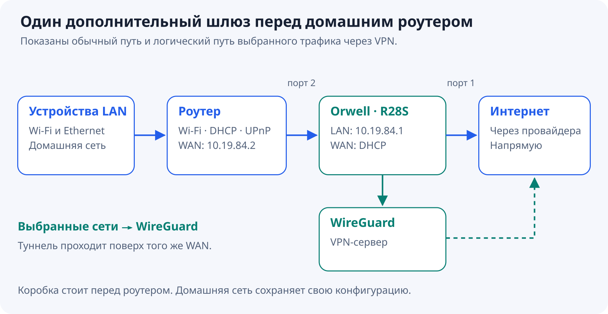
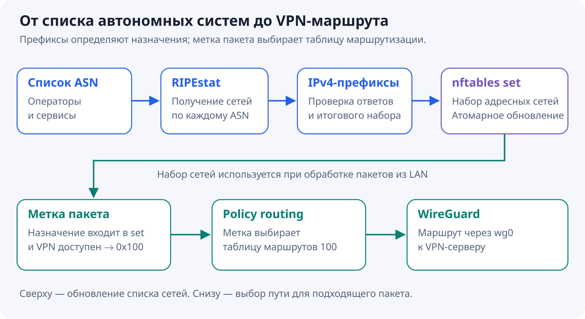
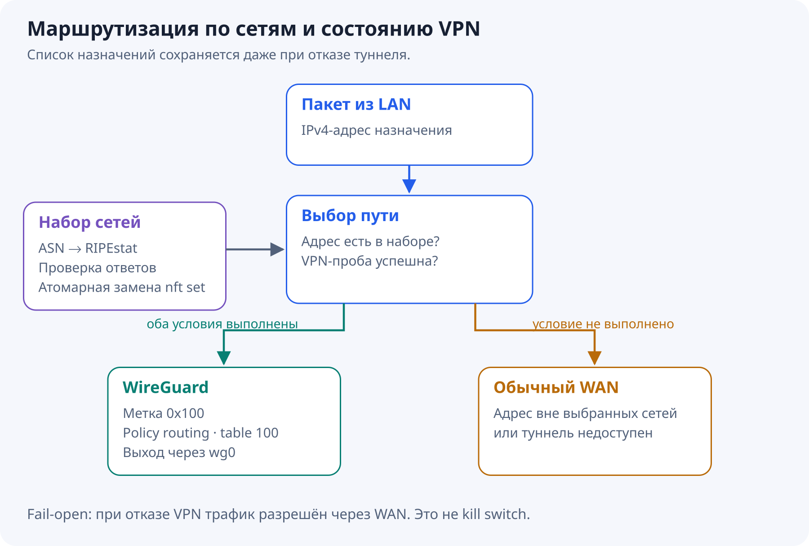
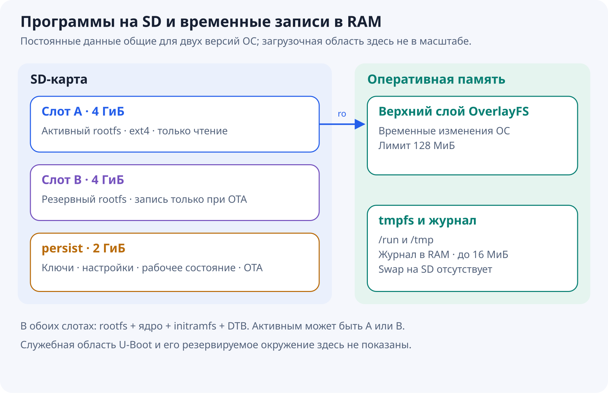
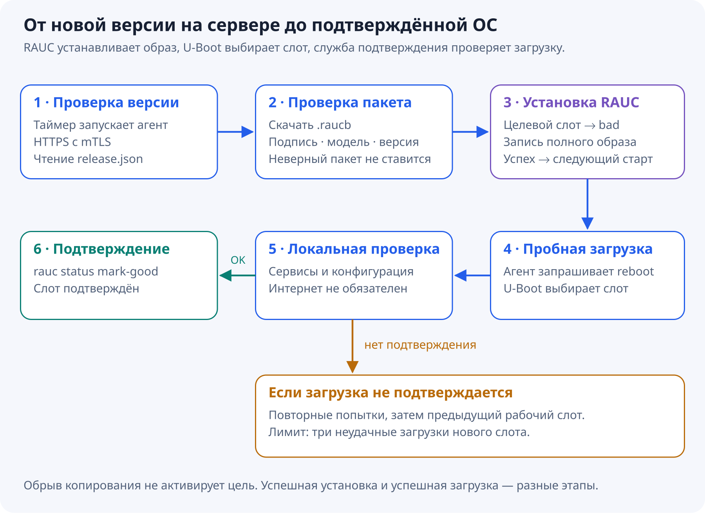

Debian · WireGuard · read-only · A/B · OTA
VPN шлюз на NanoPi R28S с обновлением образами и откатом
Мне хотелось поставить перед домашним роутером небольшую коробку, которая отправляет трафик к выбранным сетям через WireGuard, а остальной выпускает напрямую. Домашний роутер при этом продолжает раздавать Wi-Fi и заниматься домашней сетью.
Маршрутизация оказалась только частью задачи. У такой коробки есть SD-карта, питание иногда пропадает, а после неудачного обновления совсем не хочется ехать за ней с USB–UART. Поэтому постепенно получился шлюз на Debian 13 с системой только для чтения, двумя слотами ОС и подписанными OTA-обновлениями.
Куда поставить коробку
Железо — NanoPi R28S на RK3528A. Используются SD-карта, два Ethernet-порта и debug-порт для первоначальной отладки. Управление через SSH на плате в этой конфигурации не используется.

Порт 1 — WAN, адрес он получает по DHCP. Порт 2 подключён к WAN домашнего роутера. На этом участке используются адреса 10.19.84.1 у шлюза и 10.19.84.2 у роутера. Подсеть отсылает к «1984», а устройство получило имя Orwell.
У DHCP-сервера ровно один выдаваемый адрес и аренда на пять минут. Привязки к MAC клиента нет: кто подключён ко второму порту, тот и получает адрес. Это удобно при замене роутера. Единственная аренда может удерживаться предыдущим клиентом до истечения её срока; отдельного демона, который сбрасывает её при потере линка, здесь нет.
Wi-Fi, DHCP домашним устройствам и локальный UPnP остаются на домашнем роутере. Чтобы не строить цепочку UPnP-серверов, шлюз передаёт ему новые входящие TCP/UDP-соединения через DNAT с сохранением порта. Для DHCP самой платы и WireGuard endpoint предусмотрены исключения.
Двойной NAT при этом сохраняется. Такая настройка не устраняет CGNAT провайдера и сама по себе не доказывает доступность домашней сети из Интернета. Firewall нижестоящего роутера продолжает определять, какие входящие соединения разрешать.
Как выбрать трафик для VPN
Выбор сделан по автономным системам, или ASN. Это полезно, когда нужно маршрутизировать сети конкретных операторов и сервисов без поддержки длинного ручного списка адресов.
Конвейер состоит из нескольких обычных механизмов Linux:


Обновлятор получает originating-префиксы заданных AS и проверяет ответы. Новый набор попадает в nftables одной атомарной операцией. Если один из ответов некорректен или итоговый набор пуст, сохраняется предыдущий рабочий набор. Корректный ответ без IPv4-префиксов у отдельной AS не мешает обновлению остальных.
Пакеты LAN к адресам из набора получают метку 0x100. Для неё настроена отдельная таблица маршрутизации 100, ведущая в wg0. Остальные назначения используют обычный WAN. Префиксы обновляются после загрузки и затем по расписанию каждые шесть часов.
Здесь есть существенное ограничение: ASN — это принадлежность IP-сети, а не точное распознавание приложения. Например, кэш сервиса у стороннего оператора может оказаться вне выбранных AS. Один ASN, наоборот, может содержать много разных сервисов.
Что происходит при отказе туннеля
Наличие интерфейса WireGuard ещё не означает, что через него проходит трафик. Поэтому отдельный монитор примерно каждые десять секунд проверяет путь контрольным ICMP-запросом через туннель.
Успешная проба разрешает VPN-маркировку на ограниченное время — 30 секунд. Неудачная проба отзывает разрешение. Если сам монитор перестал работать, разрешение истечёт автоматически. Набор префиксов при этом не стирается.
Политика намеренно fail-open: при проблемах VPN выбранный трафик уходит через WAN. Это шлюз для доступности, а не kill switch для сокрытия трафика от провайдера. После восстановления пробы выборочная маршрутизация возвращается.
Переключение пути меняет внешний адрес и NAT-состояние. Существующим соединениям может понадобиться переподключение; бесшовного переноса TCP-сессий между WAN и VPN здесь нет.
Ещё один практический выбор — masquerade LAN при выходе в WireGuard. На VPN-сервере каждому шлюзу нужен только собственный туннельный адрес /32. Так несколько коробок могут использовать одинаковую транзитную LAN-подсеть, не создавая конфликтов маршрутов на сервере. Ключи и туннельные адреса у устройств, разумеется, должны различаться.
Какие сервисы работают внутри
В этой реализации нет отдельной универсальной панели управления. Основные функции распределены между компонентами Debian.
| Задача |
Компонент |
| Интерфейсы, DHCP-клиент WAN и DHCP-сервер LAN |
systemd-networkd |
| NAT, фильтрация и наборы адресов |
nftables |
| Туннель |
WireGuard |
| DNS платы и транзитной LAN |
Unbound |
| Синхронизация часов и NTP для LAN |
chrony |
| Запись обновлений и интеграция со слотами |
RAUC |
| Периодические проверки |
systemd timers |
Unbound использует пул DoT-серверов Cloudflare, Google, Quad9 и Яндекса. Это общий набор кандидатов с учётом доступности и задержек, а не строгая очередь «основной сервер, затем резервный» и не голосование по ответам.
Повторный запрос при действующем TTL обслуживается из кэша. Включён prefetch: если клиент запросил запись в последние 10% её TTL, Unbound возвращает ещё действующий ответ и обновляет запись в фоне. Все записи подряд по таймеру не опрашиваются.
Для профиля платы заданы четыре рабочих потока, кэш сообщений 32 МиБ и RRset-кэш 64 МиБ. Это настройки кэшей, а не измеренный предел производительности и не общий лимит памяти процесса. Нагрузочных цифр QPS в этой статье нет.
Если все настроенные DoT-серверы несколько проверок подряд недоступны, отдельный монитор временно переводит Unbound на DNS из WAN DHCP. Этот аварийный режим использует обычный незашифрованный DNS. После восстановления DoT защищённый пул возвращается. Unbound при переключении не перезапускается и сохраняет кэш.
DHCP предлагает клиенту DNS и NTP шлюза, но чужие DNS, DoH и DoT не перехватываются и не блокируются. Задачи запрещать исходящие соединения у этой коробки нет.
Chrony получает время от нескольких внешних источников, включая российские, и отвечает на NTP-запросы из LAN. Время здесь важно ещё и для холодного старта TLS: неверные часы могут мешать DoT и скачиванию прошивки. Часть NTP-источников задана числовыми адресами, поэтому для их поиска не требуется уже работающий DNS.
Зачем системе раздел только для чтения
Обновлять пакеты прямо на SD удобно до первого неудачного обновления или отключения питания. Для этой коробки выбран другой способ эксплуатации: программы обновляются образом, а рабочие данные отделены от ОС.

Разметка содержит служебную область загрузки, два слота rootfs по 4 ГиБ и общий раздел persist размером 2 ГиБ. Для готового SD-образа нужна карта от 16 ГБ. В каждом слоте лежат rootfs, ядро Linux, initramfs (небольшая среда для подготовки основной системы при загрузке) и DTB (Device Tree Blob — файл с описанием аппаратуры: процессора, памяти и периферии платы). Эти компоненты переключаются вместе.
При загрузке initramfs монтирует выбранный ext4-rootfs только для чтения. Сверху создаётся OverlayFS с верхним слоем в RAM, чтобы программы могли пользоваться привычными путями файловой системы. Лимит этого слоя — 128 МиБ. Временные каталоги тоже находятся в tmpfs, системный журнал хранится в RAM с лимитом 16 МиБ. Swap на SD не создаётся.
В persist остаются данные, которые должны переживать перезапуск: ключ WireGuard, machine-id, учётные записи, настройки сети и сервисов, последний рабочий набор AS-префиксов, состояние chrony и OTA.
Это сокращает фоновую запись, но не делает её нулевой. Меняются настройки и состояние сервисов, обновляется набор префиксов. При OTA пакет сначала скачивается на SD, затем целиком записывается неактивный слот. Количественный выигрыш в записанных байтах ещё нужно измерить.
Есть и цена: временные изменения ОС и локальные журналы теряются при перезагрузке. Для постоянного изменения предусмотренных конфигурационных файлов используется отдельный механизм сохранения. Произвольная правка в RAM не превращается в новую версию прошивки.
Как собирать и обслуживать образ
Все пакеты и определения служб входят в образ заранее. Первый запуск не должен превращаться в установочный скрипт, которому для окончания работы нужен Интернет.
Одна Ansible-роль умеет настраивать смонтированный rootfs на сборочной машине и уже работающую плату. Для debug-порта сделан отдельный serial-транспорт. На самой плате Ansible controller не нужен.
На A/B-системе установка пакетов через Ansible и фоновые APT-обновления отключены. Программные изменения вносятся в rootfs вне устройства и доставляются новой прошивкой. Настройки, которым положено быть постоянными, сохраняются в persist.
Общий образ не содержит уникальных приватных ключей устройства. Отдельный этап персонализации может заранее добавить его WireGuard-идентичность, настройки и клиентский TLS-сертификат. Это позволяет подготовить конкретную SD на ПК, не занимаясь настройкой уникальных данных через UART после включения. Персонализированный образ предназначен для одного устройства: его копирование на разные коробки продублирует TLS- и WireGuard-ключи.
Как работает обновление A/B
Пока устройство работает из A, обновлятор пишет B, и наоборот. Но двух разделов недостаточно: загрузчик должен знать, можно ли запускать новый слот и что делать, если он не подтвердился.
Для установки используется RAUC из Debian, а для выбора слота — U-Boot с резервируемым окружением. Состояние хранится в переменных BOOT_ORDER, BOOT_A_LEFT и BOOT_B_LEFT. На каждый слот выделено три попытки загрузки.

Установка начинается с исключения целевого слота из загрузки. Затем RAUC записывает туда образ. Только успешное завершение установки делает его следующим кандидатом на запуск. После этого агент запрашивает обычную перезагрузку.
U-Boot уменьшает счётчик попыток до запуска ядра. После загрузки отдельная служба проверяет локальную работоспособность: networkd, nftables, Unbound, chrony, LAN-адрес, наличие WireGuard-интерфейса, read-only нижний слой и watchdog. При успехе вызывается rauc status mark-good.
Наличие WAN-аренды или исправного VPN для подтверждения не требуется. Иначе сбой провайдера мог бы откатывать исправную ОС.
Если система не подтверждается, происходят повторные загрузки, а после исчерпания трёх попыток выбирается резервный слот. Аппаратный watchdog запускается ещё в U-Boot и затем обслуживается systemd. Служба подтверждения также ограничена по времени, чтобы ожидание работоспособности не растягивалось бесконечно.
Общий persist требует дисциплины: новая прошивка не должна при пробной загрузке необратимо менять данные, которые нужны старой. Иначе откат программ сработает, а откатываться им будет уже не к чему.
Кто сообщает устройству о новой версии
Инициатор — сама коробка. Примерно через 3–4 минуты после старта и затем через 30 минут после предыдущей проверки, со случайной задержкой до минуты, systemd запускает небольшой OTA-агент. Постоянно работающего управляющего агента для этого не требуется.
Сервер хранит подписанный пакет и небольшой индекс:
{"version":"2026101608","bundle":"2026101608.raucb"}
Агент сравнивает номер с текущим и последним подтверждённым выпуском. Более старые и равные версии автоматически не устанавливаются. Имя пакета должно соответствовать номеру; индекс не может отправить клиент скачивать произвольный URL.
В штатной схеме сервер — Caddy. У каждого устройства свой клиентский сертификат и соответствующий приватный ключ для HTTPS с mTLS. Сертификаты выпускает общий CA, но приватные ключи между коробками не копируются. Дополнительно Caddy проверяет точное совпадение сертификата с явно допущенными. Для отзыва доступа одной коробки достаточно удалить её сертификат из набора допуска и перечитать конфигурацию сервера — остальные устройства продолжат работать.
Подпись прошивки проверяется отдельно от mTLS. У серверной авторизации и доверия к содержимому разные задачи: разрешение скачать файл не означает разрешения выпустить новую ОС. Приватный ключ подписи не хранится ни на устройстве, ни на сервере раздачи.
Пакеты используют формат RAUC verity. Это проверка обновления, а не утверждение, что каждый блок работающего rootfs проверяется dm-verity или что на плате настроен Secure Boot. Сам U-Boot через это OTA не обновляется.
Публикация тоже состоит из двух шагов: сначала загрузить и проверить пакет, затем атомарно заменить индекс. Так устройство не увидит объявление о файле, который ещё не докопировался.
Где пришлось разбираться с особенностями платы
Значительная часть работы оказалась на границе vendor-загрузчика и обычного Linux.
Для ранней загрузки используется FIT (Flattened Image Tree) — контейнер, объединяющий несколько загрузочных компонентов, их описания и контрольные суммы. Данные внутри него нужно было выровнять по 512 байт. С обычным выравниванием упаковщика SPL останавливался на проверке хеша одного из компонентов. При этом менять сами vendor-компоненты ранней загрузки для решения проблемы не потребовалось.
Другой случай — адрес загрузки DTB, файла с описанием аппаратуры для Linux. U-Boot тоже пользуется таким описанием во время своей работы. Если загрузить файл для Linux в ту же область оперативной памяти, описание самого загрузчика будет затёрто и его дальнейшая работа нарушится. Поэтому для Linux DTB пришлось выделить отдельный адрес.
Были и ошибки уже в initramfs. Из-за приватной umask верхний каталог OverlayFS получил права 0700, а корень унаследовал их: обычные служебные пользователи не могли пройти по /. Исправление состояло в явных правах 0755 у верхнего каталога при сохранении строгих прав для секретов.
Отдельно пришлось сохранить MAC-адреса интерфейсов платы при переносе на новую SD. Здесь MAC нужны для устойчивых имён wan0 и lan0; к привязке клиентского роутера они отношения не имеют.